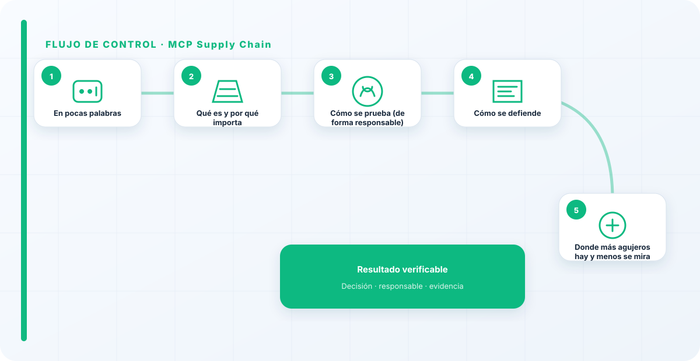
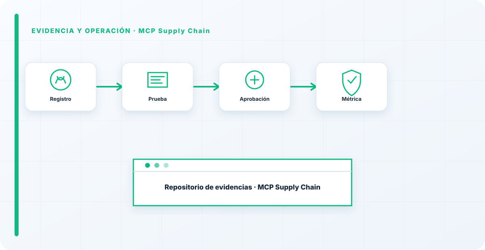

En pocas palabras
El red teaming de la cadena de suministro MCP mira un frente que casi nadie prueba: los conectores que unen tu modelo con tus datos y herramientas. Un MCP malicioso o vulnerable es como cualquier dependencia comprometida, con el agravante de que se sitúa en un punto con acceso privilegiado. La prueba, en el fondo, es una: ¿confías en tus conectores más de lo que deberías?
Qué es y por qué importa
Importa porque los MCP se conectan con enorme ligereza y tienen acceso a mucho. Un conector comprometido puede filtrar datos o ejecutar acciones desde su posición intermedia, y como es un tercero, el problema puede venir de fuera —una vulnerabilidad publicada— sin que hayas tocado nada.
Es cadena de suministro pura, aplicada a la IA, con toda su complejidad de confiar en componentes que no controlas.
Cómo se prueba (de forma responsable)
El red team revisa la procedencia y el comportamiento real de los conectores en uso, con qué permisos operan y qué acceso concentran, y evalúa qué pasaría si uno se comprometiera.
También comprueba la higiene básica de cadena de suministro: ¿están inventariados?, ¿se sabe quién los mantiene?, ¿se revisan al actualizarse? El foco es la confianza implícita en componentes de terceros.

Cómo se defiende
La defensa es tratar los MCP como lo que son: dependencias con acceso. Revisión antes de conectar, mínimo privilegio, aislamiento, inventario y procedencia registrada.
La misma disciplina de cadena de suministro que aplicas al software, llevada a los conectores de IA, que muchos todavía no viven como lo que son: código de terceros en producción.
Donde más agujeros hay y menos se mira
La cadena de suministro es donde más agujeros encuentro y menos gente mira, porque conectar un MCP es tan fácil que nadie lo vive como "meter una dependencia en producción", que es exactamente lo que es. Si no puedes decirme quién mantiene cada conector que tienes enchufado y qué hace con lo que ve, ahí tienes tu próximo incidente esperando. La facilidad de conectar no reduce el riesgo; solo lo hace invisible hasta que estalla.
Si no puedes nombrar quién mantiene cada conector que tienes enchufado, no tienes una integración: tienes una dependencia a ciegas con acceso a tus datos. Y esas son las que estallan.
Los errores que veo una y otra vez
- Conectar MCP sin revisar procedencia.
- No inventariar los conectores.
- Darles más acceso del necesario.
- No revisarlos cuando se actualizan.
- Asumir que un tercero es seguro por defecto.
Cómo lo llevaría a un entorno real
Cuando aterrizo mcp supply chain en una organización, no empiezo por comprar una herramienta ni por redactar veinte páginas. Empiezo por dibujar qué ocurre hoy: quién solicita el cambio, quién lo aprueba, qué sistemas intervienen, qué datos cruzan el proceso y quién se entera cuando algo falla. Ese dibujo suele descubrir más problemas que cualquier checklist. En AI Red Teaming, lo peligroso no es solo carecer de controles; también lo es creer que existen porque alguien los escribió una vez.
Después separo lo imprescindible de lo deseable. Lo imprescindible debe poder comprobarse: un responsable identificado, una regla clara, una evidencia fechada y un mecanismo para reaccionar. En este caso revisaría especialmente servidores MCP, manifests y tools. No me vale una respuesta del tipo «lo gestiona el proveedor» o «eso lo mira seguridad». Necesito saber qué persona toma la decisión, con qué información y dentro de qué plazo.
La implantación debe crecer con el riesgo. Un piloto interno puede funcionar con una ficha breve y una revisión manual. Un sistema que afecta a clientes, empleados, dinero o información sensible necesita segregación de funciones, pruebas independientes, monitorización y un expediente mantenido. Mi criterio es sencillo: cuanto más difícil sea deshacer el daño, más fuerte debe ser la barrera antes de producción.
Decisiones que deben quedar por escrito
Hay decisiones que no deberían vivir en una reunión ni en un mensaje de chat. Para mcp supply chain dejaría documentados el alcance, los supuestos, los límites de uso, las excepciones aceptadas y las condiciones que obligan a detener o reevaluar. El documento no tiene que ser enorme, pero sí debe permitir que otra persona entienda por qué se hizo lo que se hizo.
También registraría quién puede cambiar scopes, quién valida publishers y quién recibe las alertas relacionadas con versiones. Cuando esas tres responsabilidades se mezclan, aparece el clásico problema: el mismo equipo construye, aprueba y declara que todo funciona. No siempre se puede separar por completo, sobre todo en organizaciones pequeñas, pero al menos debe existir una revisión por alguien que no dependa del éxito inmediato del despliegue.
Las excepciones merecen un tratamiento propio. Una excepción sin fecha de caducidad acaba convirtiéndose en la arquitectura real. Por eso exigiría motivo, riesgo aceptado, responsable, compensaciones, fecha de revisión y criterio de cierre. Si falta uno de esos elementos, no es una excepción gestionada; es una deuda invisible.

Un ejemplo práctico
Imaginemos que un equipo quiere incorporar mcp supply chain a un servicio que ya está en producción. La propuesta promete reducir tiempos y automatizar tareas, pero utiliza componentes que cambian con frecuencia. Antes de aprobarlo, pediría una prueba limitada, un inventario de dependencias, un flujo de datos y una definición clara de qué acciones quedan fuera del alcance.
Durante la prueba recogería resultados normales y casos límite. No solo miraría si funciona; comprobaría qué ocurre cuando faltan datos, cambia una versión, se pierde conectividad, llega una entrada manipulada o un usuario intenta superar sus permisos. Ahí es donde se ve si el diseño aguanta. En muchas pruebas felices todo parece seguro porque nadie ha intentado romper la hipótesis de partida.
Si los resultados son aceptables, la salida a producción tendría condiciones: versión fijada, configuración aprobada, logs disponibles, responsables de guardia, procedimiento de rollback y revisión tras las primeras semanas. Si alguno de esos elementos no existe, prefiero retrasar el despliegue. Un día de demora suele ser más barato que investigar después un comportamiento que nadie puede reconstruir.
Qué evidencias guardaría
Para demostrar que el control funciona conservaría evidencias que cuenten una historia completa, no capturas sueltas. La historia debe enlazar necesidad, decisión, implementación, prueba y operación. En mcp supply chain eso incluye como mínimo la ficha del activo, el diagrama vigente, la configuración aprobada, el resultado de las pruebas y el registro de cambios.
No guardaría información por acumular. Si los logs contienen prompts, documentos, datos personales o secretos, aplicaría minimización, control de acceso y retención. La evidencia debe ayudar a investigar y auditar sin crear una segunda fuga de información. Es frecuente endurecer el sistema principal y dejar un repositorio de evidencias abierto a demasiadas personas.
- Propietario y finalidad de mcp supply chain, con fecha de revisión.
- Inventario de servidores MCP, manifests y dependencias asociadas.
- Criterios de aceptación y resultados sobre tools y scopes.
- Configuración efectiva, versión y aprobación del cambio.
- Alertas, incidentes, excepciones y acciones correctivas cerradas.
Señales de que el control no está funcionando
El primer síntoma es que nadie sabe responder con rapidez quién es el responsable. El segundo es que la documentación describe una versión distinta de la que está operando. El tercero es que las alertas existen, pero llegan a un buzón que nadie revisa. Cuando aparecen esos tres síntomas, el problema no es tecnológico: el control se ha desconectado de la operación.
También desconfío de las métricas demasiado perfectas. Cero incidentes, cero excepciones y cien por cien de cumplimiento pueden significar excelencia, pero con frecuencia significan que no estamos mirando. Prefiero indicadores que enseñen tendencia: tiempo de corrección, antigüedad de excepciones, cobertura de pruebas, cambios sin revisión y reincidencias.
Por último, revisaría el comportamiento después de cada cambio significativo. En IA, una actualización de modelo, dataset, prompt, herramienta, permiso o proveedor puede alterar el riesgo sin cambiar el nombre del servicio. Si el proceso solo reevalúa cuando se crea un proyecto nuevo, se quedará ciego durante la mayor parte de la vida útil.
Mi criterio de cierre
Considero que mcp supply chain está razonablemente controlado cuando el equipo puede explicar el proceso sin depender de una sola persona, reconstruir una decisión con evidencias y detener el servicio sin improvisar. No busco perfección documental; busco que la organización pueda tomar decisiones repetibles bajo presión.
El cierre no consiste en marcar todas las casillas. Consiste en demostrar que los riesgos relevantes tienen propietario, que los controles se prueban y que las desviaciones producen una acción. Si la evidencia no cambia ninguna decisión, probablemente estamos generando burocracia. Si una decisión importante no deja evidencia, estamos creando fragilidad.
Este enfoque es el que intento mantener en toda CyberLibrary AI: explicar el control de forma que lo entienda negocio, pero con suficiente profundidad para que arquitectura, seguridad, auditoría y operaciones puedan aplicarlo de verdad.
Referencias y marcos relacionados
Contenido educativo y defensivo. Las pruebas de seguridad solo deben hacerse sobre sistemas propios o con autorización expresa.